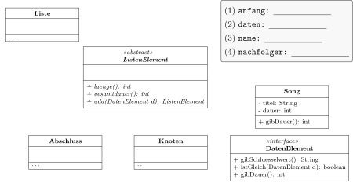
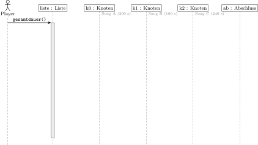
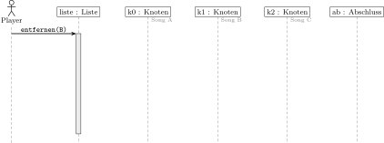
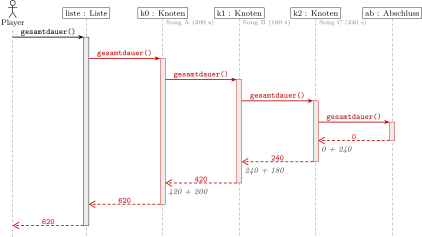
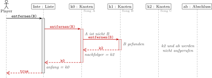
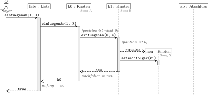
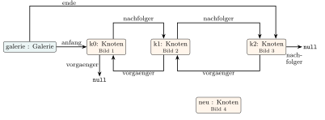
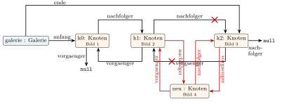

Übung zur 1. Schulaufgabe
Rekursive Datenstrukturen · Informatik 12 · Stationen 1.1 bis 1.5
Hier übst du alle Aufgabentypen: Warteschlange, Liste als Kompositum mit Klassen- und Sequenzdiagramm, Code zuordnen, ordnen und Fehler finden, Rekursion mit Aufrufbaum und die doppelt verkettete Liste. Dazu kommt ein wenig Extra. Es gibt mehr Aufgaben als in einer Schulaufgabe.So arbeitest duAufgaben wie in der Schulaufgabe
Die Aufgaben sind so formuliert wie in der Schulaufgabe: in der Sie-Form, mit einem Operator, der sagt, was verlangt ist, und mit Bewertungseinheiten (BE). Die Sterne zeigen die Schwierigkeit: ★ Grundlagen, ★★ Anwenden, ★★★ knifflig. Löse zuerst auf Papier und schau dann in die Hilfen: Tipps blenden sich mit einem Klick ein, die Lösung erst nach Gedrückthalten.
Tabellen, Klassen-, Sequenz- und Objektdiagramme gibt es als Vorlagen zum Ausdrucken. So arbeitest du wie in der Schulaufgabe direkt in die Vorlage. Code wird nirgends von null an geschrieben: Du ordnest ihn zu, bringst ihn in die richtige Reihenfolge oder findest und korrigierst Fehler.
| Operator | Was du lieferst |
|---|---|
| Nennen Sie, Geben Sie an | nur das Ergebnis, ohne Begründung |
| Bestimmen Sie | Ergebnis mit erkennbarem Weg, z. B. die Folge der Aufrufe |
| Ergänzen Sie, Vervollständigen Sie | in die Vorlage eintragen oder einzeichnen: Datentypen, Beziehungen, Aufrufe, Rückgaben |
| Zeichnen Sie | vollständig: im Sequenzdiagramm z. B. alle Aufrufe mit Parametern, Rückgaben gestrichelt mit Wert, Aktivierungsbalken |
| Ordnen Sie zu, Bringen Sie in die Reihenfolge | Buchstaben, Nummern oder Klassen eintragen |
| Korrigieren Sie | die Stelle im Code markieren und richtig stellen (Pfeil oder neu schreiben) |
| Erklären Sie, Begründen Sie | nachvollziehbar machen, warum etwas so ist („weil …“) |
| Beurteilen Sie | ein eigenes Urteil: Funktioniert es? Wann ja, wann nicht? Mit Gründen |
Aufgabe 1: WarteschlangeBestellungen beim Pizzadienst (Station 1.1)
Pizzadienst. Ein Pizzadienst nimmt Bestellungen online an. Die Küche bereitet sie in der Reihenfolge zu, in der sie eingehen. Jede Bestellung ist ein Objekt der Klasse Bestellung. Die Bestellungen warten in einer verketteten Warteschlange mit den Attributen anfang und ende und den Methoden add, poll, peek und isEmpty.
- (1 BE) ★ Nennen Sie zwei Gründe, warum eine verkettete Warteschlange hier besser geeignet ist als ein Array.
- (3 BE) ★ Die Warteschlange ist anfangs leer. Die Aufrufe werden von oben nach unten ausgeführt. Ergänzen Sie in jeder Zeile die Rückgabe des Aufrufs und den Inhalt der Warteschlange nach dem Aufruf (vorne zuerst, mit Komma getrennt). Prüfe dich hier:
| Aufruf | Rückgabe | Inhalt danach (vorne → hinten) |
|---|---|---|
add(P1) | ||
add(P2) | ||
peek() | ||
poll() | ||
add(P3) | ||
poll() | ||
poll() | ||
poll() | ||
isEmpty() |
Denke an Abende, an denen sehr viele Bestellungen gleichzeitig eingehen, und daran, was beim Herausnehmen der vordersten Bestellung in einem Array passiert.
a) Zwei davon: Die Warteschlange hat keine feste Größe, es können beliebig viele Bestellungen warten (ein Array ist voll oder muss umkopiert werden). Es wird nur Speicher für tatsächlich wartende Bestellungen belegt. Beim Herausnehmen muss nichts aufrücken: anfang rückt einfach weiter.
b) siehe Prüfstand. Die Stolpersteine: peek() liefert P1, ohne es herauszunehmen; poll() auf die leere Schlange liefert null, die Schlange bleibt leer; isEmpty() liefert dann true.
- (3 BE) ★★ Ein Mitschüler hat
addso programmiert. In der Warteschlange warten P1 und P2 (P1 vorne). Beschreiben Sie, was beim Aufrufadd(P3)mit den Verweisen geschieht, und geben Sie an, welche Bestellungen die Küche danach mitpoll()bekommt. Korrigieren Sie den Fehler im Code.
public boolean add(Bestellung b) { Knoten neu = new Knoten(b); if (isEmpty()) { anfang = neu; ende = neu; } else { ende = neu; ende.setNachfolger(neu); } return true; }
Zeichne die drei Knoten und verfolge die beiden Zeilen im else-Teil. Auf welchen Knoten verweist ende, wenn setNachfolger aufgerufen wird? Prüfen kannst du dich in der Zeiger-Werkstatt von 1.1 mit der Version „add mit ② und ③ vertauscht“.
ende verweist schon auf den neuen Knoten, bevor er angehängt wird. ende.setNachfolger(neu) macht P3 zu seinem eigenen Nachfolger; der Knoten von P2 behält null als Nachfolger. Die Küche bekommt mit poll() nur P1 und P2, danach ist anfang null und die Schlange gilt als leer: P3 geht verloren.
Korrektur: Die beiden Zeilen im else-Teil vertauschen, also erst ende.setNachfolger(neu);, dann ende = neu;.
Bewertung: 1 BE Verweise, 1 BE Folge für die Küche, 1 BE Korrektur.
- (1 BE) ★ Eine Mitschülerin hat
peek()so programmiert. Geben Sie an, waspeek()liefert, wenn P1, P2 und P3 warten (P1 vorne), und korrigieren Sie den Fehler.
public Bestellung peek() { if (isEmpty()) { return null; } return ende.getDaten(); }
- (2 BE) ★★★ Ein Mitschüler lässt in
poll()die Zeilenif (anfang == null) { ende = null; }weg. Er meint: „Das ist überflüssig,addsetzt bei einer leeren Schlangeendesowieso neu.“ Beurteilen Sie diese Aussage.
Woran erkennt add, dass die Schlange leer ist? Und worauf verweist ende, nachdem die letzte Bestellung abgeholt wurde?
d) P3, also die zuletzt eingegangene Bestellung. Korrektur: return anfang.getDaten();.
e) Mit diesem add stimmt die Aussage zunächst: isEmpty() prüft anfang == null, und im Sonderfall werden anfang und ende neu gesetzt. Trotzdem ist die Schlange zwischendurch in einem falschen Zustand: ende verweist auf den Knoten einer Bestellung, die schon abgeholt ist (der Knoten wird auch nicht freigegeben). Jede Methode, die sich auf ende verlässt, arbeitet dann falsch, z. B. ein add, das mit ende == null auf leer prüft, oder eine Methode, die die zuletzt eingegangene Bestellung liefert. Die Zeilen gehören also hinein.
Aufgabe 2: Liste als KompositumEine Playlist (Stationen 1.2 bis 1.4)
Playlist. Eine Musik-App speichert jede Playlist als Liste nach dem Entwurfsmuster Kompositum. Jeder Song ist ein Objekt der Klasse Song, die das Interface DatenElement implementiert. Der Vertrag DatenElement wurde um die Methode gibDauer() erweitert: Sie liefert die Dauer eines Songs in Sekunden.
- (5 BE) ★★ Vervollständigen Sie das Klassendiagramm: Ergänzen Sie in der Liste oben rechts die Datentypen der Attribute (1) bis (4). Tragen Sie die Nummer jedes Attributs in das Attributfeld der Klasse ein, zu der es gehört. Zeichnen Sie alle Beziehungen ein (Assoziationen mit Namen, Vererbung, Implementierung).
- (1 BE) ★ Umranden Sie die Klassen der Struktur und die Klassen des Inhalts und nennen Sie einen Vorteil dieser Trennung.

Welche Klasse kennt den ersten Knoten? Welche Klasse speichert einen Song? Hinter anfang und hinter nachfolger kann ein Knoten oder der Abschluss stehen: Welcher gemeinsame Typ passt dann?

ListenElement und Abschluss haben keine Attribute. nachfolger und anfang sind vom Typ ListenElement, nicht Knoten, damit auch der Abschluss dort stehen kann (leere Liste: anfang ist der Abschluss).
b) Struktur: Liste, ListenElement, Knoten, Abschluss; Inhalt: DatenElement, Song. Vorteil: Die Strukturklassen lassen sich ohne Änderung für andere Daten verwenden, z. B. für eine Liste von Podcasts; Änderungen an Song betreffen die Liste nicht.
- (2 BE) ★★ Die Klasse
Songhatte schon vorher eine MethodegibDauer(). Begründen Sie, warumgibDauer()trotzdem zusätzlich im InterfaceDatenElementstehen muss, damit ein Knoten die Gesamtdauer berechnen kann. - (5 BE) ★ Die folgenden Methodenrümpfe stammen aus der Liste nach dem Kompositum. Geben Sie jeweils die Klasse und den vollständigen Methodenkopf an (mit Rückgabetyp und Parametern samt Datentyp).
| Methodenrumpf | Klasse | Methodenkopf | |
|---|---|---|---|
| (1) | return false; | ||
| (2) | if (daten.istGleich(d)) { return nachfolger; } nachfolger = nachfolger.entfernen(d); return this; | ||
| (3) | return this; | ||
| (4) | return anfang.laenge() == 0; | ||
| (5) | if (daten.istGleich(d)) { return true; } return nachfolger.enthaelt(d); |
Von welchem Typ ist das Attribut daten im Knoten? Der Compiler prüft nur, ob es die Methode in diesem Typ gibt.
Wer hat die Attribute daten und nachfolger, wer anfang, wer gar keine? Den Rückgabetyp erkennst du an der return-Zeile, bei this und nachfolger muss er zur abstrakten Methode in ListenElement passen.
c) Im Knoten ist daten vom Typ DatenElement. Der Compiler erlaubt daten.gibDauer() nur, wenn DatenElement diese Methode vorschreibt; dass zur Laufzeit ein Song dahintersteckt, weiß er nicht. Steht sie im Interface, muss jede Inhaltsklasse sie haben, und die Struktur bleibt unabhängig von Song.
| Klasse | Methodenkopf | |
|---|---|---|
| (1) | Abschluss | public boolean enthaelt(DatenElement d) |
| (2) | Knoten | public ListenElement entfernen(DatenElement d) |
| (3) | Abschluss | public ListenElement entfernen(DatenElement d) |
| (4) | Liste | public boolean isEmpty() |
| (5) | Knoten | public boolean enthaelt(DatenElement d) |
Je Zeile ½ BE Klasse und ½ BE Kopf. Bei (3) muss der Abschluss beim Entfernen nichts tun: Er gibt sich selbst zurück, damit der Vorgänger ihn weiter als Nachfolger einträgt.
- (3 BE) ★★ Die App zeigt die Gesamtdauer einer Playlist an. Dafür gibt es in den Klassen der Struktur die Methode
gesamtdauer()(Code unten). In der Liste stehen die Songs A (200 s), B (180 s) und C (240 s) in den Knotenk0,k1,k2. Der Player ruftliste.gesamtdauer()auf. Ergänzen Sie das Sequenzdiagramm mit allen Aufrufen, Rückgaben mit Wert und Aktivierungsbalken. Die Aufrufe vongibDauer()müssen Sie nicht einzeichnen.
// in der Klasse Knoten public int gesamtdauer() { return nachfolger.gesamtdauer() + daten.gibDauer(); } // in der Klasse Liste public int gesamtdauer() { return anfang.gesamtdauer(); } // in der Klasse Abschluss public int gesamtdauer() { return 0; }

- (3 BE) ★★★ Der Song B wird mit
liste.entfernen(B)aus der Playlist genommen. Die Liste ruft dazu nach einer Prüfung mitenthaeltdie Methodeanfang.entfernen(d)auf und trägt die Rückgabe alsanfangein; der Knoten arbeitet wie in Teilaufgabe d) (2). Ergänzen Sie das Sequenzdiagramm mit allen Aufrufen, Rückgaben mit Wert und Aktivierungsbalken. Die Prüfung mitenthaeltund die Vergleiche mitistGleichmüssen Sie nicht einzeichnen.

- (1 BE) ★★ Erklären Sie, warum der Abschluss in e) aufgerufen wird, in f) aber nicht.
Hier gibt es keine Abbruchbedingung im Knoten: Jeder Knoten fragt seinen Nachfolger. Rechne die Rückgaben von hinten: Was liefert der Abschluss, was macht k2 daraus?
Welcher Knoten erkennt B? Was gibt er zurück, und was trägt sein Vorgänger daraufhin als nachfolger ein? Rückgaben können auch Objekte sein, z. B. k2.

Gezählt wird erst auf dem Rückweg: Jeder Knoten addiert die Dauer seines Songs zur Rückgabe seines Nachfolgers. Bewertung: 1 BE Aufrufe bis zum Abschluss, 1 BE Rückgaben 0, 240, 420, 620, 620, 1 BE Aktivierungsbalken.

f) k1 gibt seinen Nachfolger k2 zurück und wird so übersprungen; k0 gibt sich selbst zurück, damit die Liste ihn weiter als anfang einträgt.
g) gesamtdauer() braucht die Dauer aller Songs, also muss jeder Knoten weiterfragen, bis der Abschluss 0 liefert. entfernen(B) ist fertig, sobald B gefunden ist: Der Knoten mit B ruft niemanden mehr auf.
Aufgabe 3: Code ordnenEinen Song an eine Position einfügen
Ein Song soll an eine bestimmte Stelle der Playlist: einfuegenAn(position, d) fügt d so ein, dass er danach an der Stelle position steht (0 heißt ganz vorne). In Liste und Abschluss ist die Methode schon fertig: Die Liste ruft anfang.einfuegenAn(position, d) auf und trägt die Rückgabe als anfang ein; der Abschluss hängt den Song wie bei add hinten an. Das Sequenzdiagramm zeigt den Ablauf für die Playlist A, B und den Aufruf liste.einfuegenAn(1, X). Danach lautet die Reihenfolge A, X, B.

- (3 BE) ★★ Bringen Sie für die Methode
einfuegenAnder KlasseKnotendie passenden Bausteine in die richtige Reihenfolge. Zwei Bausteine werden nicht gebraucht. (Auf Papier: Buchstaben in die Kästchen der Vorlage. Hier: Bausteine anklicken.)
public ListenElement einfuegenAn(int position, DatenElement d) {
}
Bausteine (Klick: in die Methode; Klick in der Methode: zurück)
- (2 BE) ★★★ Eine Mitschülerin verwendet im
else-Zweig statt G und A nur den Baustein I. Beurteilen Sie ihre Lösung für die Situation im Sequenzdiagramm. Geben Sie dazu an, welche Songs danach in der Playlist stehen. - (2 BE) ★★★ Ein Mitschüler verwendet statt G den Baustein C. Beurteilen Sie seine Lösung für die Aufrufe
einfuegenAn(0, X)undeinfuegenAn(1, X). - (1 BE) ★★ Geben Sie an, was
liste.einfuegenAn(5, X)bei der Playlist A, B bewirkt, und begründen Sie kurz.
Lies das Diagramm Lebenslinie für Lebenslinie: k0 (position nicht 0) reicht weiter und trägt die Rückgabe ein, k1 (position 0) erzeugt einen Knoten und stellt ihn vor sich. Welche Zeilen gehören zu welchem Fall?
Spiele die Variante im Diagramm durch: Was gibt k0 jetzt an die Liste zurück, und was trägt die Liste als anfang ein? Bei c): Wird position auf dem Weg durch die Liste jemals 0?
a) F, B, H, E, D, G, A:
public ListenElement einfuegenAn(int position, DatenElement d) { if (position == 0) { Knoten neu = new Knoten(d); neu.setNachfolger(this); return neu; } else { nachfolger = nachfolger.einfuegenAn(position - 1, d); return this; } }
b) k1 liefert wie bisher neu. k0 trägt das nicht als Nachfolger ein, sondern gibt es direkt an die Liste weiter, und die Liste setzt anfang = neu. In der Playlist stehen nur noch X, B: Song A geht verloren. Richtig wäre die Variante nur bei position 0. Jeder Knoten, der weiterreicht, muss sich selbst zurückgeben.
c) Bei einfuegenAn(0, X) ist alles richtig, weil der else-Zweig nicht gebraucht wird. Bei einfuegenAn(1, X) wird position nie kleiner: Jeder Knoten reicht mit 1 weiter, bis der Abschluss X hinten anhängt. Ergebnis A, B, X statt A, X, B; es gibt keinen Absturz, aber das Ergebnis ist falsch.
d) X wird hinten angehängt (A, B, X): Die Position wird nie 0, also kommt der Aufruf beim Abschluss an, und der hängt an.
Aufgabe 4: RekursionAufrufbaum und Abbruchbedingung (Station 1.5)
Türme von Hanoi. Ein Turm aus n Scheiben soll umgesetzt werden. Die Methode zuege berechnet, wie viele Züge man mindestens braucht: erst den Turm aus n - 1 Scheiben zur Seite, dann die größte Scheibe, dann den kleineren Turm wieder darauf.
public int zuege(int n) { if (n == 0) { return 0; } return zuege(n - 1) + 1 + zuege(n - 1); }
- (2 BE) ★ Zeichnen Sie den Aufrufbaum für
zuege(3). Markieren Sie die Abbruchfälle und schreiben Sie an jeden Aufruf seine Rückgabe. - (1 BE) ★★ Bestimmen Sie ohne Baum, wie viele Aufrufe
zuege(4)insgesamt auslöst. - (2 BE) ★★★ Ein Mitschüler ändert die Abbruchbedingung in
if (n == 1) { return 1; }, weil man dann weniger Aufrufe braucht. Beurteilen Sie seine Änderung.
Jeder Aufruf mit n größer als 0 hat zwei Kinder mit n - 1. Die Rückgabe eines Aufrufs ist die Summe seiner Kinder plus 1.
Zähle die Aufrufe je Ebene: 1, 2, 4, … Wie viele Ebenen hat der Baum bei zuege(4)?

a) 15 Aufrufe, Ergebnis 7, Abbruchfälle sind die acht Aufrufe zuege(0).
b) Die Aufrufe verdoppeln sich je Ebene: 1 + 2 + 4 + 8 + 16 = 31.
c) Für n ≥ 1 stimmt das Ergebnis, und es sind weniger Aufrufe (die Aufrufe mit 0 fallen weg). Aber zuege(0) ruft jetzt zuege(-1) auf, das zuege(-2) usw.: n wird nie 1, die Rekursion endet nicht. Die Änderung ist also nur richtig, wenn die Methode nie mit 0 aufgerufen wird; sicherer wäre if (n <= 1) { return n; }.
- (2 BE) ★★ Gegeben ist die Methode unten. Geben Sie die Aufrufe und Rückgaben für
zaehle(6)an und beurteilen Sie, für welche Werte vonndie Methode endet. - (1 BE) ★★ Geben Sie eine Abbruchbedingung an, mit der
zaehlefür jede ganze Zahl endet.
public int zaehle(int n) { if (n == 0) { return 0; } return 1 + zaehle(n - 2); }
Probiere auch zaehle(5) und zaehle(-2): Welche Werte nimmt n an, und wird 0 jemals getroffen?
d) zaehle(6) → zaehle(4) → zaehle(2) → zaehle(0) liefert 0, dann 1, 2, 3: Ergebnis 3. Die Methode endet nur für gerade n ≥ 0. Bei ungeraden n springt n über die 0 hinweg (…, 1, −1, −3, …), bei negativen n entfernt es sich immer weiter von 0: Die Rekursion endet nicht.
e) if (n <= 0) { return 0; }
Aufgabe 5: Doppelt verkettete ListeEine Bildergalerie
Bildergalerie. In einer Galerie-App blättert man mit „weiter“ und „zurück“ durch die Bilder. Deshalb ist die Galerie doppelt verkettet: Jeder Knoten kennt seinen nachfolger und seinen vorgaenger, die Galerie kennt anfang und ende. Das vereinfachte Objektdiagramm zeigt drei Bilder und einen schon erzeugten Knoten neu.

- (3 BE) ★★ Bild 4 soll zwischen Bild 2 und Bild 3 stehen. Zeichnen Sie die Änderungen in das Objektdiagramm ein und geben Sie in einer Tabelle (Knoten, Attribut, alter Wert, neuer Wert) alle Attribute an, die sich ändern.
- (2 BE) ★★ Ausgehend vom ursprünglichen Diagramm (ohne a) wird Bild 1 gelöscht. Geben Sie alle Änderungen in einer Tabelle an.
- (2 BE) ★★★ Ein Programm fügt Bild 4 so ein: zuerst
k1.setNachfolger(neu), danachneu.setNachfolger(k1.getNachfolger()). Beurteilen Sie diese Reihenfolge. - (1 BE) ★ Nennen Sie je einen Vorteil und einen Nachteil der doppelten Verkettung gegenüber der einfachen.
Beim Einfügen braucht der neue Knoten zwei Verweise, und zwei bestehende Verweise müssen auf ihn umgebogen werden. anfang und ende?
Beim Löschen des ersten Bilds ändert sich ein Verweis der Galerie und ein Verweis eines Knotens.

| Knoten | Attribut | alter Wert | neuer Wert | |
|---|---|---|---|---|
| a) | neu | nachfolger | null | k2 |
| neu | vorgaenger | null | k1 | |
| k1 | nachfolger | k2 | neu | |
| k2 | vorgaenger | k1 | neu | |
| b) | galerie | anfang | k0 | k1 |
| k1 | vorgaenger | k0 | null |
a) anfang und ende bleiben gleich. b) Die Verweise von k0 selbst muss man nicht ändern: Auf k0 verweist nichts mehr.
c) Falsch: Nach der ersten Zeile liefert k1.getNachfolger() schon neu. neu wird also sein eigener Nachfolger, und auf Bild 3 verweist von vorne kein Knoten mehr; „weiter“ kommt nie zu Bild 3. Richtig ist die umgekehrte Reihenfolge (oder Bild 3 vorher in einer Variablen merken).
d) Vorteil: Man kann in beide Richtungen blättern, und ein Knoten kann sich ohne Suche nach dem Vorgänger aushängen. Nachteil: mehr Speicher je Knoten und mehr Verweise, die bei jeder Änderung stimmen müssen (mehr Fehlerquellen).
Aufgabe 6: Ein wenig extraStapel, abstrakte Klasse und Interface, Schnellcheck
Diese Aufgaben gehen etwas über die Stationen hinaus. Sie helfen dir, die Ideen der Warteschlange und des Kompositums auf neue Situationen zu übertragen.
Stapel (Stack). Bei einem Stapel Teller nimmt man immer den obersten, und neue Teller kommen oben drauf: Last in, first out (LIFO). Ein Stapel hat die Methoden push(d) (oben drauflegen), pop() (obersten herunternehmen und zurückgeben, bei leerem Stapel null) und peek(). Die „Rückgängig“-Funktion eines Texteditors speichert die letzten Änderungen in einem Stapel.
- (2 BE) ★ Ein leerer Stapel erhält nacheinander
push(T1),push(T2),pop(),push(T3),pop(),pop(),pop(). Geben Sie die Rückgaben derpop-Aufrufe und den Inhalt am Ende an. - (2 BE) ★★ Ein Stapel soll verkettet umgesetzt werden. Begründen Sie, warum dafür ein Attribut
obengenügt, während die Warteschlangeanfangundendebraucht. - (2 BE) ★★ Begründen Sie, warum
ListenElementeine abstrakte Klasse ist,DatenElementaber ein Interface.
An welchem Ende arbeiten push und pop? Bei der Warteschlange: An welchem Ende wird angefügt, an welchem entnommen?
a) pop() liefert T2, dann T3, dann T1, dann null; am Ende ist der Stapel leer.
b) push und pop arbeiten beide am selben Ende: push stellt den neuen Knoten vor oben und setzt oben auf ihn, pop rückt oben auf den Nachfolger weiter. Die Warteschlange fügt hinten an und entnimmt vorne, sie braucht deshalb einen Verweis auf jedes Ende (sonst müsste add jedes Mal bis ans Ende laufen).
c) Knoten und Abschluss sind beide Teile der Struktur und haben dieselben Methoden mit unterschiedlichem Verhalten; eine abstrakte Klasse fasst sie als gemeinsamen Typ zusammen (sie könnte auch Attribute oder fertige Methoden enthalten). DatenElement ist nur ein Vertrag für beliebige Inhaltsklassen: Ein Song kann ihn erfüllen und trotzdem von einer anderen Klasse erben, denn eine Klasse kann viele Interfaces implementieren, aber nur von einer Klasse erben.
Schnellcheck: wahr oder falsch?
- Bei einer Warteschlange liefert
peek()das Element, das zuletzt hinzugefügt wurde.peek()liefert wiepoll()das vorderste Element, nimmt es aber nicht heraus. - Im Kompositum gibt es keine Abfrage auf
null, weil am Ende der Liste immer der Abschluss steht.Der Abschluss beantwortet jede Methode selbst, z. B.laenge()mit 0. - Von der abstrakten Klasse
ListenElementkann man mitnew ListenElement()Objekte erzeugen.Von abstrakten Klassen gibt es keine Objekte, nur von ihren Unterklassen Knoten und Abschluss. - Gibt ein Knoten in
addnurreturn nachfolger.add(d);zurück, können Daten verloren gehen.Sein Vorgänger trägt dann den Rest der Liste als Nachfolger ein, und der Knoten selbst ist nicht mehr erreichbar. - Jede rekursive Methode braucht genau einen rekursiven Aufruf.
zuegehat zwei rekursive Aufrufe, es entsteht ein Aufrufbaum. Nötig ist eine Abbruchbedingung, die auch erreicht wird. - Im Sequenzdiagramm werden Rückgaben gestrichelt gezeichnet und mit dem Rückgabewert beschriftet.Aufrufe sind durchgezogen mit gefüllter Spitze, Rückgaben gestrichelt mit offener Spitze.
- Das Attribut
nachfolgereines Knotens hat im Kompositum den TypKnoten.Es hat den TypListenElement, damit auch der Abschluss Nachfolger sein kann. - Polymorphie bedeutet hier:
nachfolger.laenge()führt je nach Objekt die Methode von Knoten oder von Abschluss aus.Welche Methode läuft, entscheidet das Objekt zur Laufzeit. - Beim Löschen eines Knotens aus einer doppelt verketteten Liste ändern sich immer genau zwei Attribute.In der Mitte sind es zwei (Nachfolger des Vorgängers, Vorgänger des Nachfolgers). Am Anfang oder Ende ändert sich stattdessen
anfangoderende, beim einzigen Knoten sogar beide. - Ein Stapel arbeitet nach dem Prinzip „last in, first out“.Das zuletzt abgelegte Element wird als Erstes wieder genommen.
ChecklisteKann ich das?
- ☐ Ich kann Vor- und Nachteile von Array und verketteter Struktur nennen.
- ☐ Ich kann eine Folge von
add,poll,peekundisEmptydurchspielen, auch bei leerer Warteschlange. - ☐ Ich finde Fehler in
add,pollundpeek(vertauschte Zeilen, falscher Verweis) und kann sie im Code korrigieren. - ☐ Ich kann das Klassendiagramm des Kompositums ergänzen: Attribute mit Typ der richtigen Klasse zuordnen, Vererbung, Implementierung, Assoziationen.
- ☐ Ich kann Struktur und Inhalt unterscheiden und einen Vorteil der Trennung nennen.
- ☐ Ich kann Methodenrümpfe der richtigen Klasse zuordnen und den vollständigen Methodenkopf angeben.
- ☐ Ich kann ein Sequenzdiagramm zu einer rekursiven Listenmethode zeichnen: Aufrufe, Rückgaben mit Wert, Aktivierungsbalken. Ich erkenne, ob der Abschluss erreicht wird.
- ☐ Ich kann eine abgewandelte Listenmethode mit Hilfe eines Sequenzdiagramms aus Bausteinen zusammensetzen und falsche Varianten beurteilen.
- ☐ Ich weiß, warum ein Knoten in
addund ähnlichen Methoden sich selbst zurückgibt. - ☐ Ich kann einen Aufrufbaum zeichnen und beurteilen, ob eine Abbruchbedingung immer erreicht wird.
- ☐ Ich kann in einer doppelt verketteten Liste einfügen und löschen und alle geänderten Attribute angeben.
Zum Nachschlagen: 1.1 Warteschlange · 1.2 Interfaces · 1.3 Listen und Rekursion · 1.4 Kompositum · 1.5 Rekursive Algorithmen